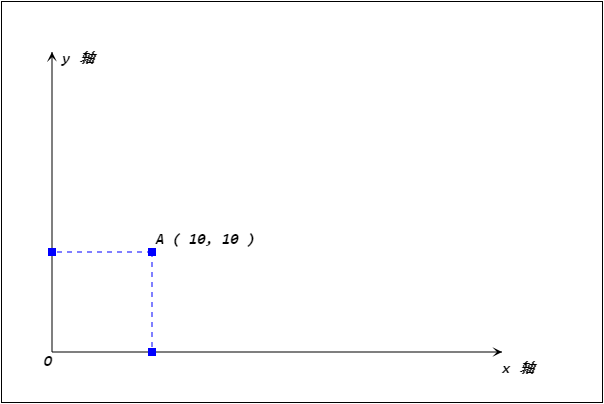
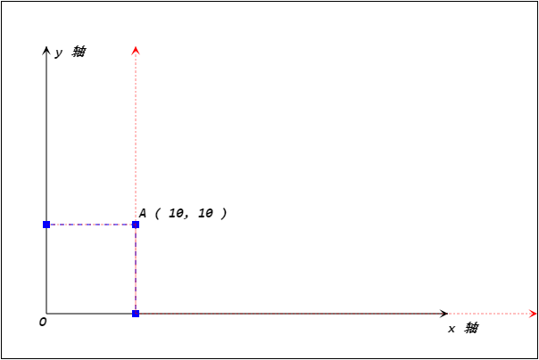
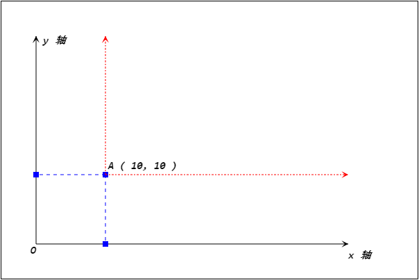
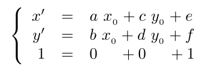
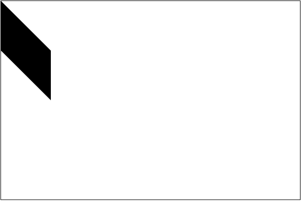
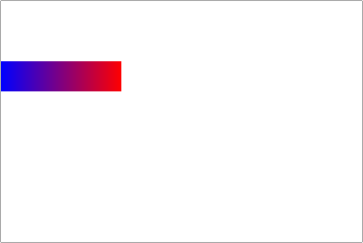
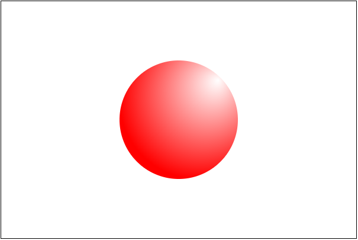

变换
Canvas 绘图中支持矩阵变换功能. 其中涉及的常用方法有
CanvasRenderingContext2D.transform()CanvasRenderingContext2D.scale()CanvasRenderingContext2D.translate()CanvasRenderingContext2D.rotate()CanvasRenderingContext2D.setTransForm()
还有一些方法, 暂时没有普及与确定. 因此这里的几个方法才是最常用的方法.
什么是变换
计算机图形学是建立在解析几何基础之上的. 也就是说所有绘制的图形都是基于坐标进行计算得到的. 那么利用坐标系位置的调整, 同样的坐标可以得到不同的效果. 例如有一个点 A ( 10, 10 ). 可以在坐标系中绘制出该点.

如果调整坐标系. 比如将坐标系向右移动 10 个单位, 得到

此时同样是 A 点, 坐标就变成了 ( 0, 10 ). 然后再把坐标系向上移动 10 个单位, 得到

那么针对新坐标系, 这个点的坐标就是 ( 0, 0 ). 这个就是坐标变换. 通过移动坐标的位置, 对坐标进行旋转, 以及对坐标轴数据的缩放, 从而使得原有点的坐标发生变化, 或利用原有的坐标点绘制新的效果.
坐标变换有一套完整的数学公式. 利用矩阵可以很容易的表示坐标的所有变换.

这里的 a, b, c, d, e, f 就刚好是 transform 函数的 参数.
- 其中 a 有时又标记为 m11. 它表示水平缩放.
- 其中 b 有时又标记为 m12. 它表示水平倾斜.
- 其中 c 有时又标记为 m21. 它表示垂直倾斜.
- 其中 d 有时又标记为 m22. 它表示垂直缩放.
- 其中 e 有时又标记为 dx. 它表示水平移动.
- 其中 f 有时又标记为 dy. 它表示垂直移动.
演示
|
|
效果

这里矩阵变换会比较复杂, 因此在使用中一般使用简单的, 平移, 旋转 和 缩放 的简单 api.
平移变换
平移变换就是将原有坐标轴进行平行移动, 那么坐标轴移动后就可以使用新坐标来绘制图形了.
语法: CanvasRenderingContext2D.translate( x, y )
描述:
- 该方法将坐标进行平移.
- x 表示水平移动, 正数向右, 负数向左.
- y 表示垂直移动, 正数向下, 负数向上.
- 变换可以重复调用, 变换是可以累加的.
使用该变换, 常常用于绘制不同位置, 但是形状重复的图形.
注意: 变换也会被 “继承”, 开启新路径后依旧保留原先变换.
旋转变换
语法: CanvasRenderingContext2D.rotate( radian )
描述:
- 该方法将坐标轴进行旋转变换.
- 参数是弧度, 表示旋转的方式. 正数表示顺时针旋转, 负数表示逆时针旋转.
该变换常常用于实现旋转动画等.
缩放变换
语法: CanvasRenderingContext2D.scale( x, y )
描述:
- 该方法实现水平与垂直的缩放.
- 参数 x 控制水平缩放倍率. 传参 1 表示不作缩放, 传入大于 1 的数字表示扩大.
- 参数 y 控制垂直缩放倍率. 传参 1 表示不作缩放, 传入大于 1 的数字表示扩大.
该变换常常用于放大与缩小, 以及反转的效果.
环境
前面提到 Canvas 是含有状态的, 也就是说需要修改颜色, 直线样式, 绘图方式等效果时需要开启一个新的状态. 但是有时在绘制过程中需要修改状态, 同时绘制完当前状态后又需要回到之前的状态中继续绘制另外的形状. 那么只有再将修改过的样式载更改回来. 如果在该状态中修改的属性较多, 那么每次在回到之前状态时就有很多的代码.
Canvas 中引入了状态的保持机制. 使用 CanvasRenderingContext2D.save() 方法可以保存当前状态. 如果需要恢复到已经保存的状态, 只需要调用 CanvasRenderingContext2D.restore() 方法即可.
状态保持的机制是基于状态栈实现的. 也就是说 save 一次就存储一个状态. restore 一次就将刚刚存入的恢复. 如果 save 两次, 就需要 restore 两次, 才可以恢复到最先的状态.
一般在封装绘图的时候都会采用开始绘制之前, save 一次, 然后 开启一个新路径, 然后绘制结束后 restore, 然后再开启一个新路径. 这样保持当前状态不会对其他绘图代码构成影响.
优化
canvas 在绘制图片的时候, drawImage 方法还支持将一个 canvas 绘制到另一个 canvas 中. 因此使用该功能, 可以在内存中完成复杂的绘图, 将绘制好的半成品再绘制到 canvas 中合成需要的效果.
画布保存
画布在绘制后实际上就是一张图片, 可以直接右键另存为. 同时也支持使用 js 代码将其保存为 base64 编码的字符串.
语法: Canvas.ToDataURL( type, encoderOptions )
描述:
- 该方法可以将画布转换成 base64 格式的数据
- type 表示输出类型. 例如: image/png 或 image/jpeg 等
- encoderOptions 表示图片输出质量, 其取值在 0 到 1 之间. 如果是 1, 表示无损压缩, 必须使用 image/jpeg 或 image/webp 才起作用
|
|
渐变和图案
绘制图像有两个主要方法, 一个是描边, 一个是填充. 前面介绍过要设置其样式, 可以使用 strokeStyle 和 fillStyle 属性, 只需要给它们提供颜色就可以了. 但是不仅仅是颜色, 它还支持渐变和重复.
相关方法
CanvasRenderingContext2D.createLinearGradient()CanvasRenderingContext2D.createRadialGradient()CanvasRenderingContext2D.createPattern()
线性渐变
语法: CanvasRenderingContext2D.createLinearGradient( x0, y0, x1, y1 )
描述:
- 该方法返回一个 CanvasGradient 对象. 用于描述渐变的方式.
- 该方法有两个参数, 用于表示线型渐变的方向与位置.
- 使用的时候, 首先创建一个 CanvasGradient 对象, 然后利用 addColorStop 方法添加颜色区间.
- 方法语法:
CanvasGradient.addColorStop( rate, color ). - 该方法用于设置在某个比例位置的颜色是什么. rate 的取值是 0 到 1 之间.
- 可以添加多个渐变点.
- 方法语法:
- 然后将该对象赋值给
*Style属性即可.
案例
|
|
效果

注意: 渐变点的坐标是基于坐标轴来计算的.
放射渐变
语法: CanvasRenderingContext2D.createRadialGradient( x0, y0, r0, x1, y1, r1 )
描述:
- 该方法实现放射渐变, 渐变的是在两个圆之间. 一般会使用两个内含关系的圆.
- 前三个参数分别表示其中一个圆的圆心的坐标, 以及半径.
- 后三个参数分别表示另一个圆的圆心的坐标, 以及半径.
- 绘制渐变效果用法与线性渐变一样.
案例
|
|
效果

重复填充
语法: CanvasRenderingContext2D.createPattern( img, repetition )
描述:
- 该方法表示使用图片来填充的设置方法. 需要两个参数, 一个是图片, 一个是重复的方式.
- 图片允许是 img 标签, 图片, canvas 等对象
- 可选择的重复方式与 CSS 一致. 有: repeat, repeat-x, repeat-y, no-repeat.
- 如果是 空或””, 但不是 undefined, 默认就是 repeat.
准备一张图片
案例
|
|
效果
阴影
在 Canvas 中还可以给绘制的内容设置阴影. 但是一般不这么用, 因为性能不高.
相关属性:
CanvasRenderingContext2D.shadowBlur属性表示模糊程度.CanvasRenderingContext2D.shadowColor属性表示模糊颜色.CanvasRenderingContext2D.shadowOffsetX属性表示模糊位置 x 坐标偏移.CanvasRenderingContext2D.shadowOffsetY属性表示模糊位置 y 坐标偏移.